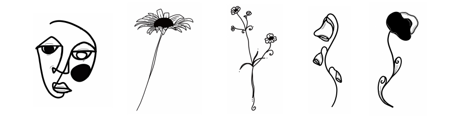

Genom litteraturen lär vi känna oss själva och varandra. Hos oss är det litterära samtalet kvalificerat men prestigelöst. Vi ger personlig Litterär vägledning och bedriver litteratursamtal i två former: som Interaktiv biblioterapi och Litterär salong.

Interaktiv biblioterapi är ett introspektivt, enskilt och privat litterärt samtal mellan dig och din terapeut. Samtalet bygger på dina intryck av det lästa och är inriktat mot din personliga utveckling.
Litterär salong är ett expressivt samtal mellan dig och dina vänner tillsammans med en terapeut. Samtalet kan ta många riktningar och blir så lättsamt och livligt eller djupsinnigt och tankfullt vi själva vill.
Inför första träffen möts vi för ett förberedande samtal för att lära känna varandra och tillsammans komma fram till vilken litteratur som passar just dig eller din grupp.
Litterär vägledning är en språngbräda för dig som helst läser och reflekterar helt på egen hand. Med avstamp i din beskrivning av dina intressen och av din livssituation ger vi en gedigen och personlig rekommendation av litteratur som ställer just dina tankar och funderingar i nytt ljus.
Intresseanmälan